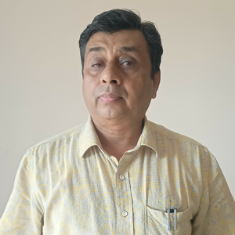
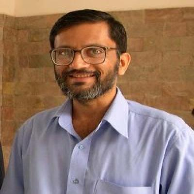

About the Program
The M.Tech in Data Science at IIT Guwahati is a two-year, full-time postgraduate program designed to train the next generation of data scientists, researchers, and industry leaders. Launched in 2019, this program is a collaborative initiative between the Mehta Family School of Data Science and Artificial Intelligence, the Department of Mathematics, and the Department of Electronics and Electrical Engineering.
The program blends rigorous coursework with hands-on research, equipping students with a deep understanding of data science principles, tools, and real-world applications.

The M.Tech in Data Science program represents a forward-looking initiative to develop skilled professionals who can lead in data-driven innovation. As the coordinating department, we aim to provide students with cutting-edge training in AI, machine learning, and data science applications, backed by strong academic mentorship and industry engagement. We welcome you to be part of this exciting journey.- Prof. Ratnajit Bhattacharjee, Head, Mehta Family School of Data Science and AI, IIT Guwahati

Mathematics forms the foundation of data science—from statistics and optimization to modeling and inference. Our department is proud to contribute to this interdisciplinary program by strengthening students’ theoretical understanding and problem-solving abilities, which are essential for meaningful data analysis. We’re delighted to support this academic endeavor.- Prof. Natesan Srinivasan, Head, Dept. Mathematics, IIT Guwahati

The integration of data science with systems, signals, and real-world engineering problems opens new frontiers in technology and innovation. Through our department’s contributions, students gain insights into the intersection of data, hardware, and intelligent systems—equipping them for impactful careers in diverse sectors. We are proud to be a part of this collaborative program.- Prof. Harshal B. Nemade, Head, Dept. Electronics and Electrical Engg., IIT Guwahati
Program Highlights
- Interdisciplinary Approach Jointly offered by three leading departments, fostering a well-rounded academic and practical perspective.
- Comprehensive Curriculum Covers core areas such as machine learning, deep learning, statistics, data mining, optimization, and big data technologies.
- Thesis-Driven Learning A full-year interdisciplinary thesis project allows students to apply their knowledge to meaningful problems, often in collaboration with faculty or industry.
- Research and Innovation Focus Opportunities to engage in cutting-edge research and contribute to open-source, publications, or entrepreneurial ventures.
- Industry-Relevant Skills Strong emphasis on practical skills and tools widely used in industry — Python, TensorFlow, PyTorch, Spark, etc.
- Excellent Faculty and Infrastructure Learn from experienced faculty with expertise spanning AI, statistics, signal processing, and more — supported by modern labs and computational resources.
Program Structure
Duration
2 years (4 semesters)
Components
- Year 1: Core and elective courses
- Year 2: Full-time interdisciplinary thesis project.
Credit Requirements
A combination of coursework and thesis credits as per the institute's academic norms.
Who Should Apply?
The program is ideal for students with a background in engineering, mathematics, statistics, or computer science who are passionate about working at the intersection of data, computation, and real-world impact.
Eligibility Criteria for M.Tech in Data Science
Candidates must hold one of the following degrees:
- B.E. / B.Tech. / M.Sc. / MCA / Four-year B.S. or equivalent in any engineering or science discipline. A minimum of 6.0 CPI on a 10-point scale (or 60% aggregate marks) is required for general category candidates. For SC/ST/PwD candidates, the minimum requirement is relaxed to 5.5 CPI (or 55% aggregate marks).
Additinally, the candidates must have GATE qualification in one of the following discipline:
- Data Science & Artificial Intelligence (DA)
- Computer Science and Information Technology (CS)
- Electronics and Communication Engineering (EC)
- Electrical Engineering (EE)
- Instrumentation Engineering (IN)
- Mathematics (MA)
- Statistics (ST)
- Engineering Sciences (XE)
For IIT UG (or graduating) candidates:
- Candidates without a valid GATE score but with a four-year undergraduate degree from an IIT and a CPI ≥ 8.0 will also be considered for the selection process.